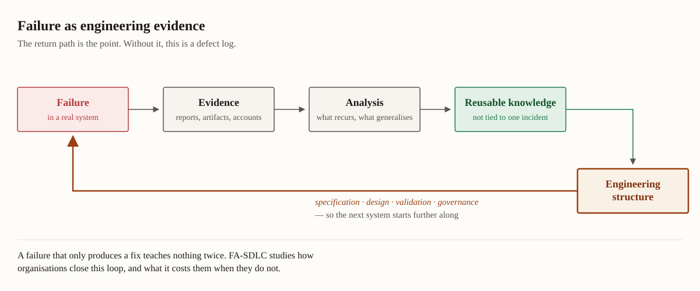

How should engineering organizations anticipate, analyze, and learn from failure across the software lifecycle, so that failure becomes a source of reusable engineering knowledge rather than a recurring surprise?

Failure knowledge is a feedback system that changes subsequent engineering, not a bug database.
Selected research
Learning From Software Failures: A Case Study at a National Space Research Center
Proceedings of the 48th IEEE/ACM International Conference on Software Engineering (ICSE) · 2026
A Guide to Stakeholder Analysis for Cybersecurity Researchers
arXiv · 2025
FAIL: Analyzing Software Failures from the News Using LLMs
Proceedings of the 39th IEEE/ACM International Conference on Automated Software Engineering (ASE) · 2024
Reflecting on the use of the Policy-Process-Product Theory in Empirical Software Engineering
Proceedings of the 31st ACM Joint Meeting on European Software Engineering Conference and Symposium on the Foundations of Software Engineering: Ideas, Visions, and Reflections track (ESEC/FSE-IVR) · 2023
Proceedings of the 30th ACM Joint Meeting on European Software Engineering Conference and Symposium on the Foundations of Software Engineering: Ideas, Visions, and Reflections track (ESEC/FSE-IVR) · 2022